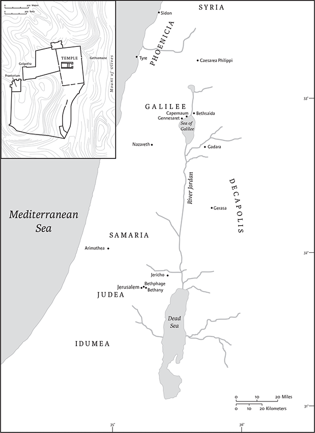

Mark
Canonical Status
Among canonical Gospels, Mark features the briefest account of Jesus's life, death, and resurrection. Yet its authoritative status is clear from its use in Matthew and Luke and its inclusion in the biblical codices of the fourth century, where it is placed second, between Matthew and Luke.
Authorship, Date, and Historical Context
Mark was written anonymously. The designation “according to Mark” was added in the second century ce, as Gospels began to circulate beyond the audiences for whom they were written. One early second-century source claims that “Mark” was the apostle Peter's “interpreter” at the end of Peter's life, but no other evidence confirms that connection. Others have identified Mark as the “John Mark” who traveled with the apostle Paul (see Acts 12.12,25; 15.37–39; Col 4.10; 2 Tim 4.11; Philem 24), but none of these passages link John Mark with a written Gospel.
Though the author's identity is unknown, scholars find clues about its author in the Gospel itself. For example, its awkward style suggests that Greek was not the author's first language. Other details, such as the imprecise citation of Jewish scripture (1.2), the over-generalized portrait of Jewish practice (7.3–4), and problematic geographical details (5.1,13) suggest that the evangelist was a Hellenized Jew who lived outside of Palestine.
The Gospel appears to address a mixed audience of Jews and Gentiles who faced persecution because of their devotion to Jesus of Nazareth as the long-awaited Jewish messiah. Early church tradition saw ties to the Christian community in Rome, where Nero punished Christians as scapegoats for the fire in 64 ce, which raged for nine days and devastated much of the city (see Tacitus, Annals 15.44). Most scholars today opt for a different context in the same time period. They argue that specific details in Mark 13.9–13 are better suited to a setting in Syria-Palestine, where Jesus's followers may have been hated by both Jews and Gentiles for not taking sides, in the Jewish War (66–72 ce).
Contents and Structure
The Gospel may be outlined as follows:
Mark begins and ends abruptly, omitting several episodes and teachings found in the other Gospels (e.g., Jesus's birth; the Sermon on the Mount; postresurrection appearances). In its first half, Mark emphasizes Jesus's miraculous powers more than his teaching. Its second half pivots toward the “way of the cross,” as the story aligns Jesus's destiny in Jerusalem with that of his followers. Along the way, Mark's narrative is fraught with perplexing motifs such as Jesus's insistence on secrecy and the disciples’ repeated misunderstanding.
The Gospel is constructed around the unifying message announced at the beginning: the “good news” that God's kingdom has drawn near (1.14–15). Both Jesus's deeds of power and his destined suffering expose the contours of that divine reign taking root on earth through Jesus and, by extension, through those he gathers as its subjects. Indeed, the Gospel's original ending at Mark 16.8 leaves readers, implicitly rather than explicitly, to continue Jesus's messianic mission by trusting in God's sovereign power over evil in the postresurrection age.
Interpretation
Lacking the content and polish of the other NT Gospels, Mark was often neglected. Only a few papyrus fragments survive from the period before the fourth century. Augustine thought that Mark was an abbreviation of Matthew. Yet modern readers have turned to this sometimes-puzzling story with renewed interest. Since scholars generally agree that Mark is the earliest written Gospel, it may include facets of Jesus's historical ministry that have been reshaped by later evangelists. From a different perspective, literary critics have found artistry in a story long disparaged for its crudeness; for instance, Mark often tells a “story within a story” (a technique called “intercalation”) to sharpen thematic contrast (14.1–11) or emphasize important motifs (5.21–43).
To be sure, Mark still appears problematic to many readers: Jesus utters confounding teaching (4.11–12), suppresses his identity (1.34; 3.12; etc.), and even seems to question God (14.36; 15.34). For their part, his disciples misunderstand Jesus's message again and again (4.13; 6.52; 8.17–21; etc.) and disappear when he faces death (14.27,50).
Increasingly, interpreters find that Jewish apocalyptic writings offer a helpful lens for reading Mark's story as a showdown between human and divine sovereignty. In his healings, exorcisms, and nature miracles, Mark's Jesus acts as authorized agent of the divine power emanating from God's coming kingdom; in his conflict with human authorities—religious and political—he exposes the nature of that divine power, which operates in restorative, vulnerable solidarity with the weak. Thus Mark emerges as a story that establishes the contours of God's kingdom and elicits allegiance to it. If that allegiance entails persecution, and even death, Mark's apocalyptic message ends with the hope that redemption still awaits, since the risen Lord will “go before” (14.28; cf. 16.7) the faithful as God's kingdom takes root on the earth.
Suzanne Watts Henderson
1
The beginning of the good newsa of Jesus Christ, the Son of God.b
4John the baptizer appearede in the wilderness, proclaiming a baptism of repentance for the forgiveness of sins. 5And people from the whole Judean countryside and all the people of Jerusalem were going out to him, and were baptized by him in the river Jordan, confessing their sins. 6Now John was clothed with camel's hair, with a leather belt around his waist, and he ate locusts and wild honey. 7He proclaimed, “The one who is more powerful than I is coming after me; I am not worthy to stoop down and untie the thong of his sandals. 8I have baptized you witha water; but he will baptize you witha the Holy Spirit.”
9In those days Jesus came from Nazareth of Galilee and was baptized by John in the Jordan. 10And just as he was coming up out of the water, he saw the heavens torn apart and the Spirit descending like a dove on him. 11And a voice came from heaven, “You are my Son, the Beloved;b with you I am well pleased.”
12And the Spirit immediately drove him out into the wilderness. 13He was in the wilderness forty days, tempted by Satan; and he was with the wild beasts; and the angels waited on him.
14Now after John was arrested, Jesus came to Galilee, proclaiming the good newsc of God,d 15and saying, “The time is fulfilled, and the kingdom of God has come near;e repent, and believe in the good news.”c
16As Jesus passed along the Sea of Galilee, he saw Simon and his brother Andrew casting a net into the sea—for they were fishermen. 17And Jesus said to them, “Follow me and I will make you fish for people.” 18And immediately they left their nets and followed him. 19As he went a little farther, he saw James son of Zebedee and his brother John, who were in their boat mending the nets. 20Immediately he called them; and they left their father Zebedee in the boat with the hired men, and followed him.
21They went to Capernaum; and when the sabbath came, he entered the synagogue and taught. 22They were astounded at his teaching, for he taught them as one having authority, and not as the scribes. 23Just then there was in their synagogue a man with an unclean spirit, 24and he cried out, “What have you to do with us, Jesus of Nazareth? Have you come to destroy us? I know who you are, the Holy One of God.” 25But Jesus rebuked him, saying, “Be silent, and come out of him!” 26And the unclean spirit, convulsing him and crying with a loud voice, came out of him. 27They were all amazed, and they kept on asking one another, “What is this? A new teaching—with authority! Hea commands even the unclean spirits, and they obey him.” 28At once his fame began to spread throughout the surrounding region of Galilee.
29As soon as theyb left the synagogue, they entered the house of Simon and Andrew, with James and John. 30Now Simon's mother-in-law was in bed with a fever, and they told him about her at once. 31He came and took her by the hand and lifted her up. Then the fever left her, and she began to serve them.
32That evening, at sunset, they brought to him all who were sick or possessed with demons. 33And the whole city was gathered around the door. 34And he cured many who were sick with various diseases, and cast out many demons; and he would not permit the demons to speak, because they knew him.
35In the morning, while it was still very dark, he got up and went out to a deserted place, and there he prayed. 36And Simon and his companions hunted for him. 37When they found him, they said to him, “Everyone is searching for you.” 38He answered, “Let us go on to the neighboring towns, so that I may proclaim the message there also; for that is what I came out to do.” 39And he went throughout Galilee, proclaiming the message in their synagogues and casting out demons.
40A leperc came to him begging him, and kneelingd he said to him, “If you choose, you can make me clean.” 41Moved with pity,e Jesusf stretched out his hand and touched him, and said to him, “I do choose. Be made clean!” 42Immediately the leprosyc left him, and he was made clean. 43After sternly warning him he sent him away at once, 44saying to him, “See that you say nothing to anyone; but go, show yourself to the priest, and offer for your cleansing what Moses commanded, as a testimony to them.” 45But he went out and began to proclaim it freely, and to spread the word, so that Jesusf could no longer go into a town openly, but stayed out in the country; and people came to him from every quarter.
2
When he returned to Capernaum after some days, it was reported that he was at home. 2So many gathered around that there was no longer room for them, not even in front of the door; and he was speaking the word to them. 3Then some peopleg came, bringing to him a paralyzed man, carried by four of them. 4And when they could not bring him to Jesus because of the crowd, they removed the roof above him; and after having dug through it, they let down the mat on which the paralytic lay. 5When Jesus saw their faith, he said to the paralytic, “Son, your sins are forgiven.” 6Now some of the scribes were sitting there, questioning in their hearts, 7“Why does this fellow speak in this way? It is blasphemy! Who can forgive sins but God alone?” 8At once Jesus perceived in his spirit that they were discussing these questions among themselves; and he said to them, “Why do you raise such questions in your hearts? 9Which is easier, to say to the paralytic, ‘Your sins are forgiven,’ or to say, ‘Stand up and take your mat and walk’? 10But so that you may know that the Son of Man has authority on earth to forgive sins”—he said to the paralytic—11“I say to you, stand up, take your mat and go to your home.” 12And he stood up, and immediately took the mat and went out before all of them; so that they were all amazed and glorified God, saying, “We have never seen anything like this!”
13Jesusa went out again beside the sea; the whole crowd gathered around him, and he taught them. 14As he was walking along, he saw Levi son of Alphaeus sitting at the tax booth, and he said to him, “Follow me.” And he got up and followed him.
15And as he sat at dinnerb in Levi'sc house, many tax collectors and sinners were also sittingd with Jesus and his disciples—for there were many who followed him. 16When the scribes ofe the Pharisees saw that he was eating with sinners and tax collectors, they said to his disciples, “Why does he eatf with tax collectors and sinners?” 17When Jesus heard this, he said to them, “Those who are well have no need of a physician, but those who are sick; I have come to call not the righteous but sinners.”
18Now John's disciples and the Pharisees were fasting; and peopleg came and said to him, “Why do John's disciples and the disciples of the Pharisees fast, but your disciples do not fast?” 19Jesus said to them, “The wedding guests cannot fast while the bridegroom is with them, can they? As long as they have the bridegroom with them, they cannot fast. 20The days will come when the bridegroom is taken away from them, and then they will fast on that day.
21“No one sews a piece of unshrunk cloth on an old cloak; otherwise, the patch pulls away from it, the new from the old, and a worse tear is made. 22And no one puts new wine into old wineskins; otherwise, the wine will burst the skins, and the wine is lost, and so are the skins; but one puts new wine into fresh wineskins.”a
23One sabbath he was going through the grainfields; and as they made their way his disciples began to pluck heads of grain. 24The Pharisees said to him, “Look, why are they doing what is not lawful on the sabbath?” 25And he said to them, “Have you never read what David did when he and his companions were hungry and in need of food? 26He entered the house of God, when Abiathar was high priest, and ate the bread of the Presence, which it is not lawful for any but the priests to eat, and he gave some to his companions.” 27Then he said to them, “The sabbath was made for humankind, and not humankind for the sabbath; 28so the Son of Man is lord even of the sabbath.”
3
Again he entered the synagogue, and a man was there who had a withered hand. 2They watched him to see whether he would cure him on the sabbath, so that they might accuse him. 3And he said to the man who had the withered hand, “Come forward.” 4Then he said to them, “Is it lawful to do good or to do harm on the sabbath, to save life or to kill?” But they were silent. 5He looked around at them with anger; he was grieved at their hardness of heart and said to the man, “Stretch out your hand.” He stretched it out, and his hand was restored. 6The Pharisees went out and immediately conspired with the Herodians against him, how to destroy him.
7Jesus departed with his disciples to the sea, and a great multitude from Galilee followed him; 8hearing all that he was doing, they came to him in great numbers from Judea, Jerusalem, Idumea, beyond the Jordan, and the region around Tyre and Sidon. 9He told his disciples to have a boat ready for him because of the crowd, so that they would not crush him; 10for he had cured many, so that all who had diseases pressed upon him to touch him. 11Whenever the unclean spirits saw him, they fell down before him and shouted, “You are the Son of God!” 12But he sternly ordered them not to make him known.
13He went up the mountain and called to him those whom he wanted, and they came to him. 14And he appointed twelve, whom he also named apostles,a to be with him, and to be sent out to proclaim the message, 15and to have authority to cast out demons. 16So he appointed the twelve:b Simon (to whom he gave the name Peter); 17James son of Zebedee and John the brother of James (to whom he gave the name Boanerges, that is, Sons of Thunder); 18and Andrew, and Philip, and Bartholomew, and Matthew, and Thomas, and James son of Alphaeus, and Thaddaeus, and Simon the Cananaean, 19and Judas Iscariot, who betrayed him.
Then he went home; 20and the crowd came together again, so that they could not even eat. 21When his family heard it, they went out to restrain him, for people were saying, “He has gone out of his mind.” 22And the scribes who came down from Jerusalem said, “He has Beelzebul, and by the ruler of the demons he casts out demons.” 23And he called them to him, and spoke to them in parables, “How can Satan cast out Satan? 24If a kingdom is divided against itself, that kingdom cannot stand. 25And if a house is divided against itself, that house will not be able to stand. 26And if Satan has risen up against himself and is divided, he cannot stand, but his end has come. 27But no one can enter a strong man's house and plunder his property without first tying up the strong man; then indeed the house can be plundered.
28“Truly I tell you, people will be forgiven for their sins and whatever blasphemies they utter; 29but whoever blasphemes against the Holy Spirit can never have forgiveness, but is guilty of an eternal sin”—30for they had said, “He has an unclean spirit.”
31Then his mother and his brothers came; and standing outside, they sent to him and called him. 32A crowd was sitting around him; and they said to him, “Your mother and your brothers and sistersc are outside, asking for you.” 33And he replied, “Who are my mother and my brothers?” 34And looking at those who sat around him, he said, “Here are my mother and my brothers! 35Whoever does the will of God is my brother and sister and mother.”
4
Again he began to teach beside the sea. Such a very large crowd gathered around him that he got into a boat on the sea and sat there, while the whole crowd was beside the sea on the land. 2He began to teach them many things in parables, and in his teaching he said to them: 3“Listen! A sower went out to sow. 4And as he sowed, some seed fell on the path, and the birds came and ate it up. 5Other seed fell on rocky ground, where it did not have much soil, and it sprang up quickly, since it had no depth of soil. 6And when the sun rose, it was scorched; and since it had no root, it withered away. 7Other seed fell among thorns, and the thorns grew up and choked it, and it yielded no grain. 8Other seed fell into good soil and brought forth grain, growing up and increasing and yielding thirty and sixty and a hundredfold.” 9And he said, “Let anyone with ears to hear listen!”
10When he was alone, those who were around him along with the twelve asked him about the parables. 11And he said to them, “To you has been given the secreta of the kingdom of God, but for those outside, everything comes in parables; 12in order that
‘they may indeed look, but not perceive,
and may indeed listen, but not understand;
so that they may not turn again and be forgiven.’”
13And he said to them, “Do you not understand this parable? Then how will you understand all the parables? 14The sower sows the word. 15These are the ones on the path where the word is sown: when they hear, Satan immediately comes and takes away the word that is sown in them. 16And these are the ones sown on rocky ground: when they hear the word, they immediately receive it with joy. 17But they have no root, and endure only for a while; then, when trouble or persecution arises on account of the word, immediately they fall away.b 18And others are those sown among the thorns: these are the ones who hear the word, 19but the cares of the world, and the lure of wealth, and the desire for other things come in and choke the word, and it yields nothing. 20And these are the ones sown on the good soil: they hear the word and accept it and bear fruit, thirty and sixty and a hundredfold.”
21He said to them, “Is a lamp brought in to be put under the bushel basket, or under the bed, and not on the lampstand? 22For there is nothing hidden, except to be disclosed; nor is anything secret, except to come to light. 23Let anyone with ears to hear listen!” 24And he said to them, “Pay attention to what you hear; the measure you give will be the measure you get, and still more will be given you. 25For to those who have, more will be given; and from those who have nothing, even what they have will be taken away.”
26He also said, “The kingdom of God is as if someone would scatter seed on the ground, 27and would sleep and rise night and day, and the seed would sprout and grow, he does not know how. 28The earth produces of itself, first the stalk, then the head, then the full grain in the head. 29But when the grain is ripe, at once he goes in with his sickle, because the harvest has come.”
30He also said, “With what can we compare the kingdom of God, or what parable will we use for it? 31It is like a mustard seed, which, when sown upon the ground, is the smallest of all the seeds on earth; 32yet when it is sown it grows up and becomes the greatest of all shrubs, and puts forth large branches, so that the birds of the air can make nests in its shade.”
33With many such parables he spoke the word to them, as they were able to hear it; 34he did not speak to them except in parables, but he explained everything in private to his disciples.
35On that day, when evening had come, he said to them, “Let us go across to the other side.” 36And leaving the crowd behind, they took him with them in the boat, just as he was. Other boats were with him. 37A great windstorm arose, and the waves beat into the boat, so that the boat was already being swamped. 38But he was in the stern, asleep on the cushion; and they woke him up and said to him, “Teacher, do you not care that we are perishing?” 39He woke up and rebuked the wind, and said to the sea, “Peace! Be still!” Then the wind ceased, and there was a dead calm. 40He said to them, “Why are you afraid? Have you still no faith?” 41And they were filled with great awe and said to one another, “Who then is this, that even the wind and the sea obey him?”
5
They came to the other side of the sea, to the country of the Gerasenes.a 2And when he had stepped out of the boat, immediately a man out of the tombs with an unclean spirit met him. 3He lived among the tombs; and no one could restrain him any more, even with a chain; 4for he had often been restrained with shackles and chains, but the chains he wrenched apart, and the shackles he broke in pieces; and no one had the strength to subdue him. 5Night and day among the tombs and on the mountains he was always howling and bruising himself with stones. 6When he saw Jesus from a distance, he ran and bowed down before him; 7and he shouted at the top of his voice, “What have you to do with me, Jesus, Son of the Most High God? I adjure you by God, do not torment me.” 8For he had said to him, “Come out of the man, you unclean spirit!” 9Then Jesusb asked him, “What is your name?” He replied, “My name is Legion; for we are many.” 10He begged him earnestly not to send them out of the country. 11Now there on the hillside a great herd of swine was feeding; 12and the unclean spiritsa begged him, “Send us into the swine; let us enter them.” 13So he gave them permission. And the unclean spirits came out and entered the swine; and the herd, numbering about two thousand, rushed down the steep bank into the sea, and were drowned in the sea.
14The swineherds ran off and told it in the city and in the country. Then people came to see what it was that had happened. 15They came to Jesus and saw the demoniac sitting there, clothed and in his right mind, the very man who had had the legion; and they were afraid. 16Those who had seen what had happened to the demoniac and to the swine reported it. 17Then they began to beg Jesusb to leave their neighborhood. 18As he was getting into the boat, the man who had been possessed by demons begged him that he might be with him. 19But Jesusc refused, and said to him, “Go home to your friends, and tell them how much the Lord has done for you, and what mercy he has shown you.” 20And he went away and began to proclaim in the Decapolis how much Jesus had done for him; and everyone was amazed.
21When Jesus had crossed again in the boatd to the other side, a great crowd gathered around him; and he was by the sea. 22Then one of the leaders of the synagogue named Jairus came and, when he saw him, fell at his feet 23and begged him repeatedly, “My little daughter is at the point of death. Come and lay your hands on her, so that she may be made well, and live.” 24So he went with him.
And a large crowd followed him and pressed in on him. 25Now there was a woman who had been suffering from hemorrhages for twelve years. 26She had endured much under many physicians, and had spent all that she had; and she was no better, but rather grew worse. 27She had heard about Jesus, and came up behind him in the crowd and touched his cloak, 28for she said, “If I but touch his clothes, I will be made well.” 29Immediately her hemorrhage stopped; and she felt in her body that she was healed of her disease. 30Immediately aware that power had gone forth from him, Jesus turned about in the crowd and said, “Who touched my clothes?” 31And his disciples said to him, “You see the crowd pressing in on you; how can you say, ‘Who touched me?’” 32He looked all around to see who had done it. 33But the woman, knowing what had happened to her, came in fear and trembling, fell down before him, and told him the whole truth. 34He said to her, “Daughter, your faith has made you well; go in peace, and be healed of your disease.”
35While he was still speaking, some people came from the leader's house to say, “Your daughter is dead. Why trouble the teacher any further?” 36But overhearinga what they said, Jesus said to the leader of the synagogue, “Do not fear, only believe.” 37He allowed no one to follow him except Peter, James, and John, the brother of James. 38When they came to the house of the leader of the synagogue, he saw a commotion, people weeping and wailing loudly. 39When he had entered, he said to them, “Why do you make a commotion and weep? The child is not dead but sleeping.” 40And they laughed at him. Then he put them all outside, and took the child's father and mother and those who were with him, and went in where the child was. 41He took her by the hand and said to her, “Talitha cum,” which means, “Little girl, get up!” 42And immediately the girl got up and began to walk about (she was twelve years of age). At this they were overcome with amazement. 43He strictly ordered them that no one should know this, and told them to give her something to eat.
6
He left that place and came to his hometown, and his disciples followed him. 2On the sabbath he began to teach in the synagogue, and many who heard him were astounded. They said, “Where did this man get all this? What is this wisdom that has been given to him? What deeds of power are being done by his hands! 3Is not this the carpenter, the son of Maryb and brother of James and Joses and Judas and Simon, and are not his sisters here with us?” And they took offensec at him. 4Then Jesus said to them, “Prophets are not without honor, except in their hometown, and among their own kin, and in their own house.” 5And he could do no deed of power there, except that he laid his hands on a few sick people and cured them. 6And he was amazed at their unbelief.
Then he went about among the villages teaching. 7He called the twelve and began to send them out two by two, and gave them authority over the unclean spirits. 8He ordered them to take nothing for their journey except a staff; no bread, no bag, no money in their belts; 9but to wear sandals and not to put on two tunics. 10He said to them, “Wherever you enter a house, stay there until you leave the place. 11If any place will not welcome you and they refuse to hear you, as you leave, shake off the dust that is on your feet as a testimony against them.” 12So they went out and proclaimed that all should repent. 13They cast out many demons, and anointed with oil many who were sick and cured them.
14King Herod heard of it, for Jesus’a name had become known. Some wereb saying, “John the baptizer has been raised from the dead; and for this reason these powers are at work in him.” 15But others said, “It is Elijah.” And others said, “It is a prophet, like one of the prophets of old.” 16But when Herod heard of it, he said, “John, whom I beheaded, has been raised.”
17For Herod himself had sent men who arrested John, bound him, and put him in prison on account of Herodias, his brother Philip's wife, because Herodc had married her. 18For John had been telling Herod, “It is not lawful for you to have your brother's wife.” 19And Herodias had a grudge against him, and wanted to kill him. But she could not, 20for Herod feared John, knowing that he was a righteous and holy man, and he protected him. When he heard him, he was greatly perplexed;d and yet he liked to listen to him. 21But an opportunity came when Herod on his birthday gave a banquet for his courtiers and officers and for the leaders of Galilee. 22When his daughter Herodiase came in and danced, she pleased Herod and his guests; and the king said to the girl, “Ask me for whatever you wish, and I will give it.” 23And he solemnly swore to her, “Whatever you ask me, I will give you, even half of my kingdom.” 24She went out and said to her mother, “What should I ask for?” She replied, “The head of John the baptizer.” 25Immediately she rushed back to the king and requested, “I want you to give me at once the head of John the Baptist on a platter.” 26The king was deeply grieved; yet out of regard for his oaths and for the guests, he did not want to refuse her. 27Immediately the king sent a soldier of the guard with orders to bring John'sa head. He went and beheaded him in the prison, 28brought his head on a platter, and gave it to the girl. Then the girl gave it to her mother. 29When his disciples heard about it, they came and took his body, and laid it in a tomb.
30The apostles gathered around Jesus, and told him all that they had done and taught. 31He said to them, “Come away to a deserted place all by yourselves and rest a while.” For many were coming and going, and they had no leisure even to eat. 32And they went away in the boat to a deserted place by themselves. 33Now many saw them going and recognized them, and they hurried there on foot from all the towns and arrived ahead of them. 34As he went ashore, he saw a great crowd; and he had compassion for them, because they were like sheep without a shepherd; and he began to teach them many things. 35When it grew late, his disciples came to him and said, “This is a deserted place, and the hour is now very late; 36send them away so that they may go into the surrounding country and villages and buy something for themselves to eat.” 37But he answered them, “You give them something to eat.” They said to him, “Are we to go and buy two hundred denariif worth of bread, and give it to them to eat?” 38And he said to them, “How many loaves have you? Go and see.” When they had found out, they said, “Five, and two fish.” 39Then he ordered them to get all the people to sit down in groups on the green grass. 40So they sat down in groups of hundreds and of fifties. 41Taking the five loaves and the two fish, he looked up to heaven, and blessed and broke the loaves, and gave them to his disciples to set before the people; and he divided the two fish among them all. 42And all ate and were filled; 43and they took up twelve baskets full of broken pieces and of the fish. 44Those who had eaten the loaves numbered five thousand men.
45Immediately he made his disciples get into the boat and go on ahead to the other side, to Bethsaida, while he dismissed the crowd. 46After saying farewell to them, he went up on the mountain to pray.
47When evening came, the boat was out on the sea, and he was alone on the land. 48When he saw that they were straining at the oars against an adverse wind, he came towards them early in the morning, walking on the sea. He intended to pass them by. 49But when they saw him walking on the sea, they thought it was a ghost and cried out; 50for they all saw him and were terrified. But immediately he spoke to them and said, “Take heart, it is I; do not be afraid.” 51Then he got into the boat with them and the wind ceased. And they were utterly astounded, 52for they did not understand about the loaves, but their hearts were hardened.
53When they had crossed over, they came to land at Gennesaret and moored the boat. 54When they got out of the boat, people at once recognized him, 55and rushed about that whole region and began to bring the sick on mats to wherever they heard he was. 56And wherever he went, into villages or cities or farms, they laid the sick in the market-places, and begged him that they might touch even the fringe of his cloak; and all who touched it were healed.
7
Now when the Pharisees and some of the scribes who had come from Jerusalem gathered around him, 2they noticed that some of his disciples were eating with defiled hands, that is, without washing them. 3(For the Pharisees, and all the Jews, do not eat unless they thoroughly wash their hands,a thus observing the tradition of the elders; 4and they do not eat anything from the market unless they wash it;b and there are also many other traditions that they observe, the washing of cups, pots, and bronze kettles.c) 5So the Pharisees and the scribes asked him, “Why do your disciples not lived according to the tradition of the elders, but eat with defiled hands?” 6He said to them, “Isaiah prophesied rightly about you hypocrites, as it is written,

The geography of the Gospel of Mark.
‘This people honors me with their lips,
but their hearts are far from me;
7in vain do they worship me,
teaching human precepts as doctrines.’
8You abandon the commandment of God and hold to human tradition.”
9Then he said to them, “You have a fine way of rejecting the commandment of God in order to keep your tradition! 10For Moses said, ‘Honor your father and your mother’; and, ‘Whoever speaks evil of father or mother must surely die.’ 11But you say that if anyone tells father or mother, ‘Whatever support you might have had from me is Corban’ (that is, an offering to Gode)—12then you no longer permit doing anything for a father or mother, 13thus making void the word of God through your tradition that you have handed on. And you do many things like this.”
14Then he called the crowd again and said to them, “Listen to me, all of you, and understand: 15there is nothing outside a person that by going in can defile, but the things that come out are what defile.”f
17When he had left the crowd and entered the house, his disciples asked him about the parable. 18He said to them, “Then do you also fail to understand? Do you not see that whatever goes into a person from outside cannot defile, 19since it enters, not the heart but the stomach, and goes out into the sewer?” (Thus he declared all foods clean.) 20And he said, “It is what comes out of a person that defiles. 21For it is from within, from the human heart, that evil intentions come: fornication, theft, murder, 22adultery, avarice, wickedness, deceit, licentiousness, envy, slander, pride, folly. 23All these evil things come from within, and they defile a person.”
24From there he set out and went away to the region of Tyre.g He entered a house and did not want anyone to know he was there. Yet he could not escape notice, 25but a woman whose little daughter had an unclean spirit immediately heard about him, and she came and bowed down at his feet. 26Now the woman was a Gentile, of Syrophoenician origin. She begged him to cast the demon out of her daughter. 27He said to her, “Let the children be fed first, for it is not fair to take the children's food and throw it to the dogs.” 28But she answered him, “Sir,a even the dogs under the table eat the children's crumbs.” 29Then he said to her, “For saying that, you may go—the demon has left your daughter.” 30So she went home, found the child lying on the bed, and the demon gone.
31Then he returned from the region of Tyre, and went by way of Sidon towards the Sea of Galilee, in the region of the Decapolis. 32They brought to him a deaf man who had an impediment in his speech; and they begged him to lay his hand on him. 33He took him aside in private, away from the crowd, and put his fingers into his ears, and he spat and touched his tongue. 34Then looking up to heaven, he sighed and said to him, “Ephphatha,” that is, “Be opened.” 35And immediately his ears were opened, his tongue was released, and he spoke plainly. 36Then Jesusb ordered them to tell no one; but the more he ordered them, the more zealously they proclaimed it. 37They were astounded beyond measure, saying, “He has done everything well; he even makes the deaf to hear and the mute to speak.”
8
In those days when there was again a great crowd without anything to eat, he called his disciples and said to them, 2“I have compassion for the crowd, because they have been with me now for three days and have nothing to eat. 3If I send them away hungry to their homes, they will faint on the way—and some of them have come from a great distance.” 4His disciples replied, “How can one feed these people with bread here in the desert?” 5He asked them, “How many loaves do you have?” They said, “Seven.” 6Then he ordered the crowd to sit down on the ground; and he took the seven loaves, and after giving thanks he broke them and gave them to his disciples to distribute; and they distributed them to the crowd. 7They had also a few small fish; and after blessing them, he ordered that these too should be distributed. 8They ate and were filled; and they took up the broken pieces left over, seven baskets full. 9Now there were about four thousand people. And he sent them away. 10And immediately he got into the boat with his disciples and went to the district of Dalmanutha.c
11The Pharisees came and began to argue with him, asking him for a sign from heaven, to test him. 12And he sighed deeply in his spirit and said, “Why does this generation ask for a sign? Truly I tell you, no sign will be given to this generation.” 13And he left them, and getting into the boat again, he went across to the other side.
14Now the disciplesa had forgotten to bring any bread; and they had only one loaf with them in the boat. 15And he cautioned them, saying, “Watch out—beware of the yeast of the Pharisees and the yeast of Herod.”b 16They said to one another, “It is because we have no bread.” 17And becoming aware of it, Jesus said to them, “Why are you talking about having no bread? Do you still not perceive or understand? Are your hearts hardened? 18Do you have eyes, and fail to see? Do you have ears, and fail to hear? And do you not remember? 19When I broke the five loaves for the five thousand, how many baskets full of broken pieces did you collect?” They said to him, “Twelve.” 20“And the seven for the four thousand, how many baskets full of broken pieces did you collect?” And they said to him, “Seven.” 21Then he said to them, “Do you not yet understand?”
22They came to Bethsaida. Some peoplec brought a blind man to him and begged him to touch him. 23He took the blind man by the hand and led him out of the village; and when he had put saliva on his eyes and laid his hands on him, he asked him, “Can you see anything?” 24And the mand looked up and said, “I can see people, but they look like trees, walking.” 25Then Jesusd laid his hands on his eyes again; and he looked intently and his sight was restored, and he saw everything clearly. 26Then he sent him away to his home, saying, “Do not even go into the village.”e
27Jesus went on with his disciples to the villages of Caesarea Philippi; and on the way he asked his disciples, “Who do people say that I am?” 28And they answered him, “John the Baptist; and others, Elijah; and still others, one of the prophets.” 29He asked them, “But who do you say that I am?” Peter answered him, “You are the Messiah.”f 30And he sternly ordered them not to tell anyone about him.
31Then he began to teach them that the Son of Man must undergo great suffering, and be rejected by the elders, the chief priests, and the scribes, and be killed, and after three days rise again. 32He said all this quite openly. And Peter took him aside and began to rebuke him. 33But turning and looking at his disciples, he rebuked Peter and said, “Get behind me, Satan! For you are setting your mind not on divine things but on human things.”
34He called the crowd with his disciples, and said to them, “If any want to become my followers, let them deny themselves and take up their cross and follow me. 35For those who want to save their life will lose it, and those who lose their life for my sake, and for the sake of the gospel,a will save it. 36For what will it profit them to gain the whole world and forfeit their life? 37Indeed, what can they give in return for their life? 38Those who are ashamed of me and of my wordsb in this adulterous and sinful generation, of them the Son of Man will also be ashamed when he comes in the glory of his Father with the holy angels.”
9
And he said to them, “Truly I tell you, there are some standing here who will not taste death until they see that the kingdom of God has come withc power.”
2Six days later, Jesus took with him Peter and James and John, and led them up a high mountain apart, by themselves. And he was transfigured before them, 3and his clothes became dazzling white, such as no oned on earth could bleach them. 4And there appeared to them Elijah with Moses, who were talking with Jesus. 5Then Peter said to Jesus, “Rabbi, it is good for us to be here; let us make three dwellings,e one for you, one for Moses, and one for Elijah.” 6He did not know what to say, for they were terrified. 7Then a cloud overshadowed them, and from the cloud there came a voice, “This is my Son, the Beloved;f listen to him!” 8Suddenly when they looked around, they saw no one with them any more, but only Jesus.
9As they were coming down the mountain, he ordered them to tell no one about what they had seen, until after the Son of Man had risen from the dead. 10So they kept the matter to themselves, questioning what this rising from the dead could mean. 11Then they asked him, “Why do the scribes say that Elijah must come first?” 12He said to them, “Elijah is indeed coming first to restore all things. How then is it written about the Son of Man, that he is to go through many sufferings and be treated with contempt? 13But I tell you that Elijah has come, and they did to him whatever they pleased, as it is written about him.”
14When they came to the disciples, they saw a great crowd around them, and some scribes arguing with them. 15When the whole crowd saw him, they were immediately overcome with awe, and they ran forward to greet him. 16He asked them, “What are you arguing about with them?” 17Someone from the crowd answered him, “Teacher, I brought you my son; he has a spirit that makes him unable to speak; 18and whenever it seizes him, it dashes him down; and he foams and grinds his teeth and becomes rigid; and I asked your disciples to cast it out, but they could not do so.” 19He answered them, “You faithless generation, how much longer must I be among you? How much longer must I put up with you? Bring him to me.” 20And they brought the boya to him. When the spirit saw him, immediately it convulsed the boy,a and he fell on the ground and rolled about, foaming at the mouth. 21Jesusb asked the father, “How long has this been happening to him?” And he said, “From childhood. 22It has often cast him into the fire and into the water, to destroy him; but if you are able to do anything, have pity on us and help us.” 23Jesus said to him, “If you are able!—All things can be done for the one who believes.” 24Immediately the father of the child cried out,c “I believe; help my unbelief!” 25When Jesus saw that a crowd came running together, he rebuked the unclean spirit, saying to it, “You spirit that keeps this boy from speaking and hearing, I command you, come out of him, and never enter him again!” 26After crying out and convulsing him terribly, it came out, and the boy was like a corpse, so that most of them said, “He is dead.” 27But Jesus took him by the hand and lifted him up, and he was able to stand. 28When he had entered the house, his disciples asked him privately, “Why could we not cast it out?” 29He said to them, “This kind can come out only through prayer.”d
30They went on from there and passed through Galilee. He did not want anyone to know it; 31for he was teaching his disciples, saying to them, “The Son of Man is to be betrayed into human hands, and they will kill him, and three days after being killed, he will rise again.” 32But they did not understand what he was saying and were afraid to ask him.
33Then they came to Capernaum; and when he was in the house he asked them, “What were you arguing about on the way?” 34But they were silent, for on the way they had argued with one another who was the greatest. 35He sat down, called the twelve, and said to them, “Whoever wants to be first must be last of all and servant of all.” 36Then he took a little child and put it among them; and taking it in his arms, he said to them, 37“Whoever welcomes one such child in my name welcomes me, and whoever welcomes me welcomes not me but the one who sent me.”
38John said to him, “Teacher, we saw someonea casting out demons in your name, and we tried to stop him, because he was not following us.” 39But Jesus said, “Do not stop him; for no one who does a deed of power in my name will be able soon afterward to speak evil of me. 40Whoever is not against us is for us. 41For truly I tell you, whoever gives you a cup of water to drink because you bear the name of Christ will by no means lose the reward.
42“If any of you put a stumbling block before one of these little ones who believe in me,b it would be better for you if a great millstone were hung around your neck and you were thrown into the sea. 43If your hand causes you to stumble, cut it off; it is better for you to enter life maimed than to have two hands and to go to hell,c to the unquenchable fire.d 45And if your foot causes you to stumble, cut it off; it is better for you to enter life lame than to have two feet and to be thrown into hell.c,d47And if your eye causes you to stumble, tear it out; it is better for you to enter the kingdom of God with one eye than to have two eyes and to be thrown into hell,c48where their worm never dies, and the fire is never quenched.
49“For everyone will be salted with fire.e 50Salt is good; but if salt has lost its saltiness, how can you season it?f Have salt in yourselves, and be at peace with one another.”
10
He left that place and went to the region of Judea andg beyond the Jordan. And crowds again gathered around him; and, as was his custom, he again taught them.
2Some Pharisees came, and to test him they asked, “Is it lawful for a man to divorce his wife?” 3He answered them, “What did Moses command you?” 4They said, “Moses allowed a man to write a certificate of dismissal and to divorce her.” 5But Jesus said to them, “Because of your hardness of heart he wrote this commandment for you. 6But from the beginning of creation, ‘God made them male and female.’ 7‘For this reason a man shall leave his father and mother and be joined to his wife,a 8and the two shall become one flesh.’ So they are no longer two, but one flesh. 9Therefore what God has joined together, let no one separate.”
10Then in the house the disciples asked him again about this matter. 11He said to them, “Whoever divorces his wife and marries another commits adultery against her; 12and if she divorces her husband and marries another, she commits adultery.”
13People were bringing little children to him in order that he might touch them; and the disciples spoke sternly to them. 14But when Jesus saw this, he was indignant and said to them, “Let the little children come to me; do not stop them; for it is to such as these that the kingdom of God belongs. 15Truly I tell you, whoever does not receive the kingdom of God as a little child will never enter it.” 16And he took them up in his arms, laid his hands on them, and blessed them.
17As he was setting out on a journey, a man ran up and knelt before him, and asked him, “Good Teacher, what must I do to inherit eternal life?” 18Jesus said to him, “Why do you call me good? No one is good but God alone. 19You know the commandments: ‘You shall not murder; You shall not commit adultery; You shall not steal; You shall not bear false witness; You shall not defraud; Honor your father and mother.’” 20He said to him, “Teacher, I have kept all these since my youth.” 21Jesus, looking at him, loved him and said, “You lack one thing; go, sell what you own, and give the moneyb to the poor, and you will have treasure in heaven; then come, follow me.” 22When he heard this, he was shocked and went away grieving, for he had many possessions.
23Then Jesus looked around and said to his disciples, “How hard it will be for those who have wealth to enter the kingdom of God!” 24And the disciples were perplexed at these words. But Jesus said to them again, “Children, how hard it isc to enter the kingdom of God! 25It is easier for a camel to go through the eye of a needle than for someone who is rich to enter the kingdom of God.” 26They were greatly astounded and said to one another,a “Then who can be saved?” 27Jesus looked at them and said, “For mortals it is impossible, but not for God; for God all things are possible.”
28Peter began to say to him, “Look, we have left everything and followed you.” 29Jesus said, “Truly I tell you, there is no one who has left house or brothers or sisters or mother or father or children or fields, for my sake and for the sake of the good news,b 30who will not receive a hundredfold now in this age—houses, brothers and sisters, mothers and children, and fields, with persecutions—and in the age to come eternal life. 31But many who are first will be last, and the last will be first.”
32They were on the road, going up to Jerusalem, and Jesus was walking ahead of them; they were amazed, and those who followed were afraid. He took the twelve aside again and began to tell them what was to happen to him, 33saying, “See, we are going up to Jerusalem, and the Son of Man will be handed over to the chief priests and the scribes, and they will condemn him to death; then they will hand him over to the Gentiles; 34they will mock him, and spit upon him, and flog him, and kill him; and after three days he will rise again.”
35James and John, the sons of Zebedee, came forward to him and said to him, “Teacher, we want you to do for us whatever we ask of you.” 36And he said to them, “What is it you want me to do for you?” 37And they said to him, “Grant us to sit, one at your right hand and one at your left, in your glory.” 38But Jesus said to them, “You do not know what you are asking. Are you able to drink the cup that I drink, or be baptized with the baptism that I am baptized with?” 39They replied, “We are able.” Then Jesus said to them, “The cup that I drink you will drink; and with the baptism with which I am baptized, you will be baptized; 40but to sit at my right hand or at my left is not mine to grant, but it is for those for whom it has been prepared.”
41When the ten heard this, they began to be angry with James and John. 42So Jesus called them and said to them, “You know that among the Gentiles those whom they recognize as their rulers lord it over them, and their great ones are tyrants over them. 43But it is not so among you; but whoever wishes to become great among you must be your servant, 44and whoever wishes to be first among you must be slave of all. 45For the Son of Man came not to be served but to serve, and to give his life a ransom for many.”
46They came to Jericho. As he and his disciples and a large crowd were leaving Jericho, Bartimaeus son of Timaeus, a blind beggar, was sitting by the roadside. 47When he heard that it was Jesus of Nazareth, he began to shout out and say, “Jesus, Son of David, have mercy on me!” 48Many sternly ordered him to be quiet, but he cried out even more loudly, “Son of David, have mercy on me!” 49Jesus stood still and said, “Call him here.” And they called the blind man, saying to him, “Take heart; get up, he is calling you.” 50So throwing off his cloak, he sprang up and came to Jesus. 51Then Jesus said to him, “What do you want me to do for you?” The blind man said to him, “My teacher,a let me see again.” 52Jesus said to him, “Go; your faith has made you well.” Immediately he regained his sight and followed him on the way.
11
When they were approaching Jerusalem, at Bethphage and Bethany, near the Mount of Olives, he sent two of his disciples 2and said to them, “Go into the village ahead of you, and immediately as you enter it, you will find tied there a colt that has never been ridden; untie it and bring it. 3If anyone says to you, ‘Why are you doing this?’ just say this, ‘The Lord needs it and will send it back here immediately.’” 4They went away and found a colt tied near a door, outside in the street. As they were untying it, 5some of the bystanders said to them, “What are you doing, untying the colt?” 6They told them what Jesus had said; and they allowed them to take it. 7Then they brought the colt to Jesus and threw their cloaks on it; and he sat on it. 8Many people spread their cloaks on the road, and others spread leafy branches that they had cut in the fields. 9Then those who went ahead and those who followed were shouting,
“Hosanna!
Blessed is the one who comes in the name of the Lord!
10Blessed is the coming kingdom of our ancestor David!
Hosanna in the highest heaven!”
11Then he entered Jerusalem and went into the temple; and when he had looked around at everything, as it was already late, he went out to Bethany with the twelve.
12On the following day, when they came from Bethany, he was hungry. 13Seeing in the distance a fig tree in leaf, he went to see whether perhaps he would find anything on it. When he came to it, he found nothing but leaves, for it was not the season for figs. 14He said to it, “May no one ever eat fruit from you again.” And his disciples heard it.
15Then they came to Jerusalem. And he entered the temple and began to drive out those who were selling and those who were buying in the temple, and he overturned the tables of the money changers and the seats of those who sold doves; 16and he would not allow anyone to carry anything through the temple. 17He was teaching and saying, “Is it not written,
‘My house shall be called a house of prayer for all the nations’?
But you have made it a den of robbers.”
18And when the chief priests and the scribes heard it, they kept looking for a way to kill him; for they were afraid of him, because the whole crowd was spellbound by his teaching. 19And when evening came, Jesus and his disciplesa went out of the city.
20In the morning as they passed by, they saw the fig tree withered away to its roots. 21Then Peter remembered and said to him, “Rabbi, look! The fig tree that you cursed has withered.” 22Jesus answered them, “Haveb faith in God. 23Truly I tell you, if you say to this mountain, ‘Be taken up and thrown into the sea,’ and if you do not doubt in your heart, but believe that what you say will come to pass, it will be done for you. 24So I tell you, whatever you ask for in prayer, believe that you have receivedc it, and it will be yours.
25“Whenever you stand praying, forgive, if you have anything against anyone; so that your Father in heaven may also forgive you your trespasses.”d
27Again they came to Jerusalem. As he was walking in the temple, the chief priests, the scribes, and the elders came to him 28and said, “By what authority are you doing these things? Who gave you this authority to do them?” 29Jesus said to them, “I will ask you one question; answer me, and I will tell you by what authority I do these things. 30Did the baptism of John come from heaven, or was it of human origin? Answer me.” 31They argued with one another, “If we say, ‘From heaven,’ he will say, ‘Why then did you not believe him?’ 32But shall we say, ‘Of human origin’?”—they were afraid of the crowd, for all regarded John as truly a prophet. 33So they answered Jesus, “We do not know.” And Jesus said to them, “Neither will I tell you by what authority I am doing these things.”
12
Then he began to speak to them in parables. “A man planted a vineyard, put a fence around it, dug a pit for the wine press, and built a watchtower; then he leased it to tenants and went to another country. 2When the season came, he sent a slave to the tenants to collect from them his share of the produce of the vineyard. 3But they seized him, and beat him, and sent him away empty-handed. 4And again he sent another slave to them; this one they beat over the head and insulted. 5Then he sent another, and that one they killed. And so it was with many others; some they beat, and others they killed. 6He had still one other, a beloved son. Finally he sent him to them, saying, ‘They will respect my son.’ 7But those tenants said to one another, ‘This is the heir; come, let us kill him, and the inheritance will be ours.’ 8So they seized him, killed him, and threw him out of the vineyard. 9What then will the owner of the vineyard do? He will come and destroy the tenants and give the vineyard to others. 10Have you not read this scripture:
12When they realized that he had told this parable against them, they wanted to arrest him, but they feared the crowd. So they left him and went away.
13Then they sent to him some Pharisees and some Herodians to trap him in what he said. 14And they came and said to him, “Teacher, we know that you are sincere, and show deference to no one; for you do not regard people with partiality, but teach the way of God in accordance with truth. Is it lawful to pay taxes to the emperor, or not? 15Should we pay them, or should we not?” But knowing their hypocrisy, he said to them, “Why are you putting me to the test? Bring me a denarius and let me see it.” 16And they brought one. Then he said to them, “Whose head is this, and whose title?” They answered, “The emperor's.” 17Jesus said to them, “Give to the emperor the things that are the emperor's, and to God the things that are God's.” And they were utterly amazed at him.
18Some Sadducees, who say there is no resurrection, came to him and asked him a question, saying, 19“Teacher, Moses wrote for us that if a man's brother dies, leaving a wife but no child, the manb shall marry the widow and raise up children for his brother. 20There were seven brothers; the first married and, when he died, left no children; 21and the second married the widowa and died, leaving no children; and the third likewise; 22none of the seven left children. Last of all the woman herself died. 23In the resurrectionb whose wife will she be? For the seven had married her.”
24Jesus said to them, “Is not this the reason you are wrong, that you know neither the scriptures nor the power of God? 25For when they rise from the dead, they neither marry nor are given in marriage, but are like angels in heaven. 26And as for the dead being raised, have you not read in the book of Moses, in the story about the bush, how God said to him, ‘I am the God of Abraham, the God of Isaac, and the God of Jacob’? 27He is God not of the dead, but of the living; you are quite wrong.”
28One of the scribes came near and heard them disputing with one another, and seeing that he answered them well, he asked him, “Which commandment is the first of all?” 29Jesus answered, “The first is, ‘Hear, O Israel: the Lord our God, the Lord is one; 30you shall love the Lord your God with all your heart, and with all your soul, and with all your mind, and with all your strength.’ 31The second is this, ‘You shall love your neighbor as yourself.’ There is no other commandment greater than these.” 32Then the scribe said to him, “You are right, Teacher; you have truly said that ‘he is one, and besides him there is no other’; 33and ‘to love him with all the heart, and with all the understanding, and with all the strength,’ and ‘to love one's neighbor as oneself,’—this is much more important than all whole burnt offerings and sacrifices.” 34When Jesus saw that he answered wisely, he said to him, “You are not far from the kingdom of God.” After that no one dared to ask him any question.
35While Jesus was teaching in the temple, he said, “How can the scribes say that the Messiahc is the son of David? 36David himself, by the Holy Spirit, declared,
‘The Lord said to my Lord,
“Sit at my right hand,
until I put your enemies under your feet.”’
37David himself calls him Lord; so how can he be his son?” And the large crowd was listening to him with delight.
38As he taught, he said, “Beware of the scribes, who like to walk around in long robes, and to be greeted with respect in the marketplaces, 39and to have the best seats in the synagogues and places of honor at banquets! 40They devour widows’ houses and for the sake of appearance say long prayers. They will receive the greater condemnation.”
41He sat down opposite the treasury, and watched the crowd putting money into the treasury. Many rich people put in large sums. 42A poor widow came and put in two small copper coins, which are worth a penny. 43Then he called his disciples and said to them, “Truly I tell you, this poor widow has put in more than all those who are contributing to the treasury. 44For all of them have contributed out of their abundance; but she out of her poverty has put in everything she had, all she had to live on.”
13
As he came out of the temple, one of his disciples said to him, “Look, Teacher, what large stones and what large buildings!” 2Then Jesus asked him, “Do you see these great buildings? Not one stone will be left here upon another; all will be thrown down.”
3When he was sitting on the Mount of Olives opposite the temple, Peter, James, John, and Andrew asked him privately, 4“Tell us, when will this be, and what will be the sign that all these things are about to be accomplished?” 5Then Jesus began to say to them, “Beware that no one leads you astray. 6Many will come in my name and say, ‘I am he!’a and they will lead many astray. 7When you hear of wars and rumors of wars, do not be alarmed; this must take place, but the end is still to come. 8For nation will rise against nation, and kingdom against kingdom; there will be earthquakes in various places; there will be famines. This is but the beginning of the birth pangs.
9“As for yourselves, beware; for they will hand you over to councils; and you will be beaten in synagogues; and you will stand before governors and kings because of me, as a testimony to them. 10And the good newsb must first be proclaimed to all nations. 11When they bring you to trial and hand you over, do not worry beforehand about what you are to say; but say whatever is given you at that time, for it is not you who speak, but the Holy Spirit. 12Brother will betray brother to death, and a father his child, and children will rise against parents and have them put to death; 13and you will be hated by all because of my name. But the one who endures to the end will be saved.
14“But when you see the desolating sacrilege set up where it ought not to be (let the reader understand), then those in Judea must flee to the mountains; 15the one on the housetop must not go down or enter the house to take anything away; 16the one in the field must not turn back to get a coat. 17Woe to those who are pregnant and to those who are nursing infants in those days! 18Pray that it may not be in winter. 19For in those days there will be suffering, such as has not been from the beginning of the creation that God created until now, no, and never will be. 20And if the Lord had not cut short those days, no one would be saved; but for the sake of the elect, whom he chose, he has cut short those days. 21And if anyone says to you at that time, ‘Look! Here is the Messiah!’a or ‘Look! There he is!’—do not believe it. 22False messiahsb and false prophets will appear and produce signs and omens, to lead astray, if possible, the elect. 23But be alert; I have already told you everything.
26Then they will see ‘the Son of Man coming in clouds’ with great power and glory. 27Then he will send out the angels, and gather his elect from the four winds, from the ends of the earth to the ends of heaven.
28“From the fig tree learn its lesson: as soon as its branch becomes tender and puts forth its leaves, you know that summer is near. 29So also, when you see these things taking place, you know that hec is near, at the very gates. 30Truly I tell you, this generation will not pass away until all these things have taken place. 31Heaven and earth will pass away, but my words will not pass away.
32“But about that day or hour no one knows, neither the angels in heaven, nor the Son, but only the Father. 33Beware, keep alert;d for you do not know when the time will come. 34It is like a man going on a journey, when he leaves home and puts his slaves in charge, each with his work, and commands the doorkeeper to be on the watch. 35Therefore, keep awake—for you do not know when the master of the house will come, in the evening, or at midnight, or at cockcrow, or at dawn, 36or else he may find you asleep when he comes suddenly. 37And what I say to you I say to all: Keep awake.”
14
It was two days before the Passover and the festival of Unleavened Bread. The chief priests and the scribes were looking for a way to arrest Jesusa by stealth and kill him; 2for they said, “Not during the festival, or there may be a riot among the people.”
3While he was at Bethany in the house of Simon the leper,b as he sat at the table, a woman came with an alabaster jar of very costly ointment of nard, and she broke open the jar and poured the ointment on his head. 4But some were there who said to one another in anger, “Why was the ointment wasted in this way? 5For this ointment could have been sold for more than three hundred denarii,c and the money given to the poor.” And they scolded her. 6But Jesus said, “Let her alone; why do you trouble her? She has performed a good service for me. 7For you always have the poor with you, and you can show kindness to them whenever you wish; but you will not always have me. 8She has done what she could; she has anointed my body beforehand for its burial. 9Truly I tell you, wherever the good newsd is proclaimed in the whole world, what she has done will be told in remembrance of her.”
10Then Judas Iscariot, who was one of the twelve, went to the chief priests in order to betray him to them. 11When they heard it, they were greatly pleased, and promised to give him money. So he began to look for an opportunity to betray him.
12On the first day of Unleavened Bread, when the Passover lamb is sacrificed, his disciples said to him, “Where do you want us to go and make the preparations for you to eat the Passover?” 13So he sent two of his disciples, saying to them, “Go into the city, and a man carrying a jar of water will meet you; follow him, 14and wherever he enters, say to the owner of the house, ‘The Teacher asks, Where is my guest room where I may eat the Passover with my disciples?’ 15He will show you a large room upstairs, furnished and ready. Make preparations for us there.” 16So the disciples set out and went to the city, and found everything as he had told them; and they prepared the Passover meal.
17When it was evening, he came with the twelve. 18And when they had taken their places and were eating, Jesus said, “Truly I tell you, one of you will betray me, one who is eating with me.” 19They began to be distressed and to say to him one after another, “Surely, not I?” 20He said to them, “It is one of the twelve, one who is dipping breade into the bowlf with me. 21For the Son of Man goes as it is written of him, but woe to that one by whom the Son of Man is betrayed! It would have been better for that one not to have been born.”
22While they were eating, he took a loaf of bread, and after blessing it he broke it, gave it to them, and said, “Take; this is my body.” 23Then he took a cup, and after giving thanks he gave it to them, and all of them drank from it. 24He said to them, “This is my blood of thea covenant, which is poured out for many. 25Truly I tell you, I will never again drink of the fruit of the vine until that day when I drink it new in the kingdom of God.”
26When they had sung the hymn, they went out to the Mount of Olives. 27And Jesus said to them, “You will all become deserters; for it is written,
‘I will strike the shepherd,
and the sheep will be scattered.’
28But after I am raised up, I will go before you to Galilee.” 29Peter said to him, “Even though all become deserters, I will not.” 30Jesus said to him, “Truly I tell you, this day, this very night, before the cock crows twice, you will deny me three times.” 31But he said vehemently, “Even though I must die with you, I will not deny you.” And all of them said the same.
32They went to a place called Gethsemane; and he said to his disciples, “Sit here while I pray.” 33He took with him Peter and James and John, and began to be distressed and agitated. 34And he said to them, “I am deeply grieved, even to death; remain here, and keep awake.” 35And going a little farther, he threw himself on the ground and prayed that, if it were possible, the hour might pass from him. 36He said, “Abba,b Father, for you all things are possible; remove this cup from me; yet, not what I want, but what you want.” 37He came and found them sleeping; and he said to Peter, “Simon, are you asleep? Could you not keep awake one hour? 38Keep awake and pray that you may not come into the time of trial;c the spirit indeed is willing, but the flesh is weak.” 39And again he went away and prayed, saying the same words. 40And once more he came and found them sleeping, for their eyes were very heavy; and they did not know what to say to him. 41He came a third time and said to them, “Are you still sleeping and taking your rest? Enough! The hour has come; the Son of Man is betrayed into the hands of sinners. 42Get up, let us be going. See, my betrayer is at hand.”
43Immediately, while he was still speaking, Judas, one of the twelve, arrived; and with him there was a crowd with swords and clubs, from the chief priests, the scribes, and the elders. 44Now the betrayer had given them a sign, saying, “The one I will kiss is the man; arrest him and lead him away under guard.” 45So when he came, he went up to him at once and said, “Rabbi!” and kissed him. 46Then they laid hands on him and arrested him. 47But one of those who stood near drew his sword and struck the slave of the high priest, cutting off his ear. 48Then Jesus said to them, “Have you come out with swords and clubs to arrest me as though I were a bandit? 49Day after day I was with you in the temple teaching, and you did not arrest me. But let the scriptures be fulfilled.” 50All of them deserted him and fled.
51A certain young man was following him, wearing nothing but a linen cloth. They caught hold of him, 52but he left the linen cloth and ran off naked.
53They took Jesus to the high priest; and all the chief priests, the elders, and the scribes were assembled. 54Peter had followed him at a distance, right into the courtyard of the high priest; and he was sitting with the guards, warming himself at the fire. 55Now the chief priests and the whole council were looking for testimony against Jesus to put him to death; but they found none. 56For many gave false testimony against him, and their testimony did not agree. 57Some stood up and gave false testimony against him, saying, 58“We heard him say, ‘I will destroy this temple that is made with hands, and in three days I will build another, not made with hands.’” 59But even on this point their testimony did not agree. 60Then the high priest stood up before them and asked Jesus, “Have you no answer? What is it that they testify against you?” 61But he was silent and did not answer. Again the high priest asked him, “Are you the Messiah,a the Son of the Blessed One?”
62Jesus said, “I am; and
‘you will see the Son of Man
seated at the right hand of the Power,’
and ‘coming with the clouds of heaven.’”
63Then the high priest tore his clothes and said, “Why do we still need witnesses? 64You have heard his blasphemy! What is your decision?” All of them condemned him as deserving death. 65Some began to spit on him, to blindfold him, and to strike him, saying to him, “Prophesy!” The guards also took him over and beat him.
66While Peter was below in the courtyard, one of the servant-girls of the high priest came by. 67When she saw Peter warming himself, she stared at him and said, “You also were with Jesus, the man from Nazareth.” 68But he denied it, saying, “I do not know or understand what you are talking about.” And he went out into the forecourt.b Then the cock crowed.c 69And the servant-girl, on seeing him, began again to say to the bystanders, “This man is one of them.” 70But again he denied it. Then after a little while the bystanders again said to Peter, “Certainly you are one of them; for you are a Galilean.” 71But he began to curse, and he swore an oath, “I do not know this man you are talking about.” 72At that moment the cock crowed for the second time. Then Peter remembered that Jesus had said to him, “Before the cock crows twice, you will deny me three times.” And he broke down and wept.
15
As soon as it was morning, the chief priests held a consultation with the elders and scribes and the whole council. They bound Jesus, led him away, and handed him over to Pilate. 2Pilate asked him, “Are you the King of the Jews?” He answered him, “You say so.” 3Then the chief priests accused him of many things. 4Pilate asked him again, “Have you no answer? See how many charges they bring against you.” 5But Jesus made no further reply, so that Pilate was amazed.
6Now at the festival he used to release a prisoner for them, anyone for whom they asked. 7Now a man called Barabbas was in prison with the rebels who had committed murder during the insurrection. 8So the crowd came and began to ask Pilate to do for them according to his custom. 9Then he answered them, “Do you want me to release for you the King of the Jews?” 10For he realized that it was out of jealousy that the chief priests had handed him over. 11But the chief priests stirred up the crowd to have him release Barabbas for them instead. 12Pilate spoke to them again, “Then what do you wish me to doa with the man you callb the King of the Jews?” 13They shouted back, “Crucify him!” 14Pilate asked them, “Why, what evil has he done?” But they shouted all the more, “Crucify him!” 15So Pilate, wishing to satisfy the crowd, released Barabbas for them; and after flogging Jesus, he handed him over to be crucified.
16Then the soldiers led him into the courtyard of the palace (that is, the governor's headquartersc); and they called together the whole cohort. 17And they clothed him in a purple cloak; and after twisting some thorns into a crown, they put it on him. 18And they began saluting him, “Hail, King of the Jews!” 19They struck his head with a reed, spat upon him, and knelt down in homage to him. 20After mocking him, they stripped him of the purple cloak and put his own clothes on him. Then they led him out to crucify him.
21They compelled a passer-by, who was coming in from the country, to carry his cross; it was Simon of Cyrene, the father of Alexander and Rufus. 22Then they brought Jesusa to the place called Golgotha (which means the place of a skull). 23And they offered him wine mixed with myrrh; but he did not take it. 24And they crucified him, and divided his clothes among them, casting lots to decide what each should take.
25It was nine o’clock in the morning when they crucified him. 26The inscription of the charge against him read, “The King of the Jews.” 27And with him they crucified two bandits, one on his right and one on his left.b 29Those who passed by deridedc him, shaking their heads and saying, “Aha! You who would destroy the temple and build it in three days, 30save yourself, and come down from the cross!” 31In the same way the chief priests, along with the scribes, were also mocking him among themselves and saying, “He saved others; he cannot save himself. 32Let the Messiah,d the King of Israel, come down from the cross now, so that we may see and believe.” Those who were crucified with him also taunted him.
33When it was noon, darkness came over the whole lande until three in the afternoon. 34At three o’clock Jesus cried out with a loud voice, “Eloi, Eloi, lema sabachthani?” which means, “My God, my God, why have you forsaken me?”f 35When some of the bystanders heard it, they said, “Listen, he is calling for Elijah.” 36And someone ran, filled a sponge with sour wine, put it on a stick, and gave it to him to drink, saying, “Wait, let us see whether Elijah will come to take him down.” 37Then Jesus gave a loud cry and breathed his last. 38And the curtain of the temple was torn in two, from top to bottom. 39Now when the centurion, who stood facing him, saw that in this way heg breathed his last, he said, “Truly this man was God's Son!”h
40There were also women looking on from a distance; among them were Mary Magdalene, and Mary the mother of James the younger and of Joses, and Salome. 41These used to follow him and provided for him when he was in Galilee; and there were many other women who had come up with him to Jerusalem.
42When evening had come, and since it was the day of Preparation, that is, the day before the sabbath, 43Joseph of Arimathea, a respected member of the council, who was also himself waiting expectantly for the kingdom of God, went boldly to Pilate and asked for the body of Jesus. 44Then Pilate wondered if he were already dead; and summoning the centurion, he asked him whether he had been dead for some time. 45When he learned from the centurion that he was dead, he granted the body to Joseph. 46Then Josepha bought a linen cloth, and taking down the body,b wrapped it in the linen cloth, and laid it in a tomb that had been hewn out of the rock. He then rolled a stone against the door of the tomb. 47Mary Magdalene and Mary the mother of Joses saw where the bodyb was laid.
16
When the sabbath was over, Mary Magdalene, and Mary the mother of James, and Salome bought spices, so that they might go and anoint him. 2And very early on the first day of the week, when the sun had risen, they went to the tomb. 3They had been saying to one another, “Who will roll away the stone for us from the entrance to the tomb?” 4When they looked up, they saw that the stone, which was very large, had already been rolled back. 5As they entered the tomb, they saw a young man, dressed in a white robe, sitting on the right side; and they were alarmed. 6But he said to them, “Do not be alarmed; you are looking for Jesus of Nazareth, who was crucified. He has been raised; he is not here. Look, there is the place they laid him. 7But go, tell his disciples and Peter that he is going ahead of you to Galilee; there you will see him, just as he told you.” 8So they went out and fled from the tomb, for terror and amazement had seized them; and they said nothing to anyone, for they were afraid.c
THE SHORTER ENDING OF MARK
⟦And all that had been commanded them they told briefly to those around Peter. And afterward Jesus himself sent out through them, from east to west, the sacred and imperishable proclamation of eternal salvation.d⟧
THE LONGER ENDING OF MARK
9⟦Now after he rose early on the first day of the week, he appeared first to Mary Magdalene, from whom he had cast out seven demons. 10She went out and told those who had been with him, while they were mourning and weeping. 11But when they heard that he was alive and had been seen by her, they would not believe it.
12After this he appeared in another form to two of them, as they were walking into the country. 13And they went back and told the rest, but they did not believe them.
14Later he appeared to the eleven themselves as they were sitting at the table; and he upbraided them for their lack of faith and stubbornness, because they had not believed those who saw him after he had risen.a 15And he said to them, “Go into all the world and proclaim the good newsb to the whole creation. 16The one who believes and is baptized will be saved; but the one who does not believe will be condemned. 17And these signs will accompany those who believe: by using my name they will cast out demons; they will speak in new tongues; 18they will pick up snakes in their hands,c and if they drink any deadly thing, it will not hurt them; they will lay their hands on the sick, and they will recover.”
19So then the Lord Jesus, after he had spoken to them, was taken up into heaven and sat down at the right hand of God. 20And they went out and proclaimed the good news everywhere, while the Lord worked with them and confirmed the message by the signs that accompanied it.d⟧